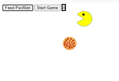
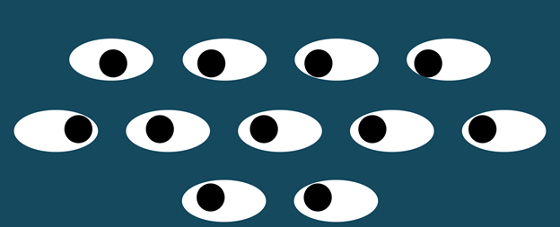
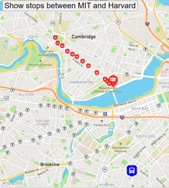

Feeding PacMan
Once "Start Game" is pressed, PacMan appears on the screen. While he is constantly moving in whatever direction he faces, he bounces off the walls. Javascript is used heavily to give him functionality.
Go to Repository

Creepy Eyes
Eleven floating eyes are on the screen and they follow you as you move the mouse around the page. Each eyeball is dynamically programmed and move independently of each other.
Go to Repository

Bus Tracker
Real-time Bus Tracker utilizes MapBox and real-time coordinates retrieved from the Massachusetts Bay Transportation authority in order to provide a graphical representation of the location for the bus on route 1.
Go to Repository